-
National Bullying Prevention Week · United Arab Emirates · 22 to 28 April 2018
Two figures, arms up.
For the Ministry of Education, with the Supreme Council for Motherhood and Childhood. The country’s first national week against bullying. I led the identity and the campaign.
The two figures of the delivered mark. -
The mark
Seven leaves grow from their hands.
Then its name. This is the campaign’s own animation, from 2018, which I directed.
Animation: Mostafa Khamis
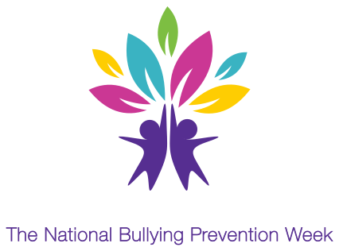
The delivered mark, 2018. -
The pieces
Two figures, seven leaves, five colours.
The original file, taken apart. Every piece is the one we delivered. The five colours became the thread of everything that followed.
The delivered vectors · portfolio presentation

The delivered vectors. -
The route
It began as a hand. It became a tree.
An earlier option, under the working name. The final mark came with the final name.
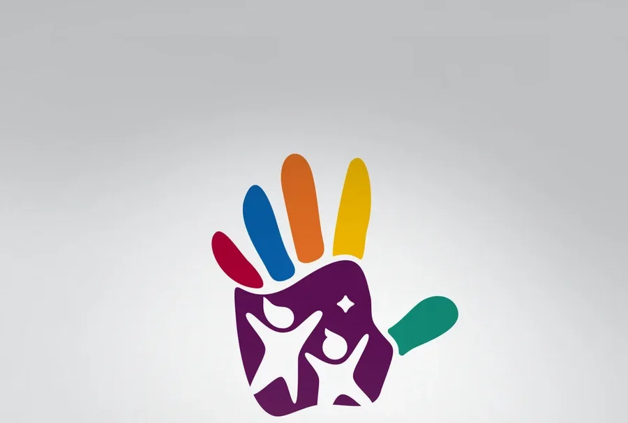
Earlier option. Presentation mock-up, April 2018. The mark we delivered.
II
The line and the world
A mark is not a campaign. It needed words, a place to live, and a way to teach.
-
The line
We gave it a line: Flourish together.
It went on everything, in two languages. Frames from the campaign’s own film.
Animation: Mostafa Khamis
From the campaign film, 2018. -
The key visual
Then a world: a hill growing out of an open book.
A tree, a kite, families, a small sign that says Anti Bullying City. It went on the posters, the brochure, the flags and the screens.
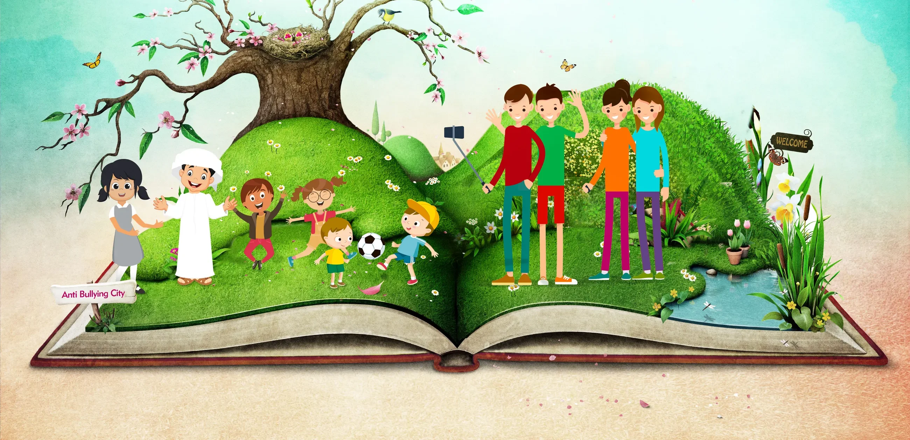
The key visual, 2018. -
The film
The film names seven things a school can do.
One wheel, seven parts, in Arabic and in English. We wrote it, designed it and had it animated.
Open the film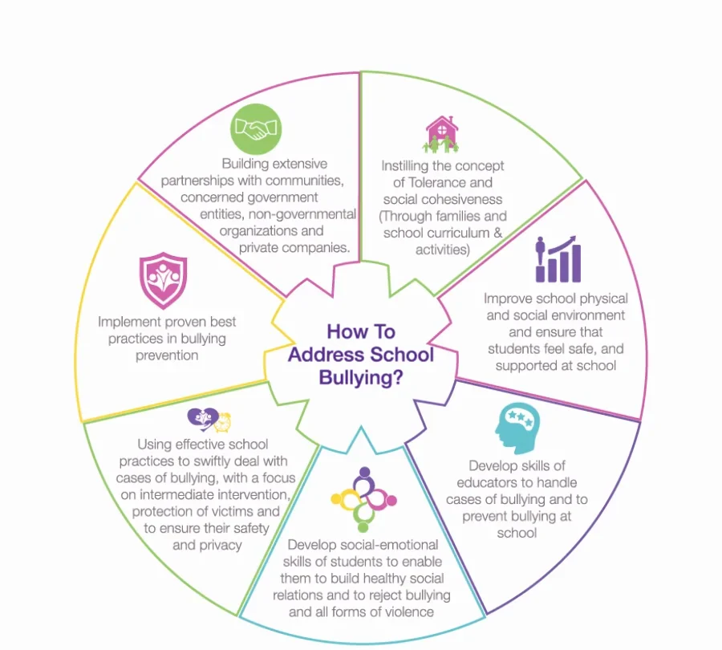
From the campaign film, 2018. Animation by Mostafa Khamis. -
Print
Ten thousand brochures, in two languages.
I led the writing as well as the design, in Arabic and English. A thousand posters went to schools in six emirates. Two of the English pages.
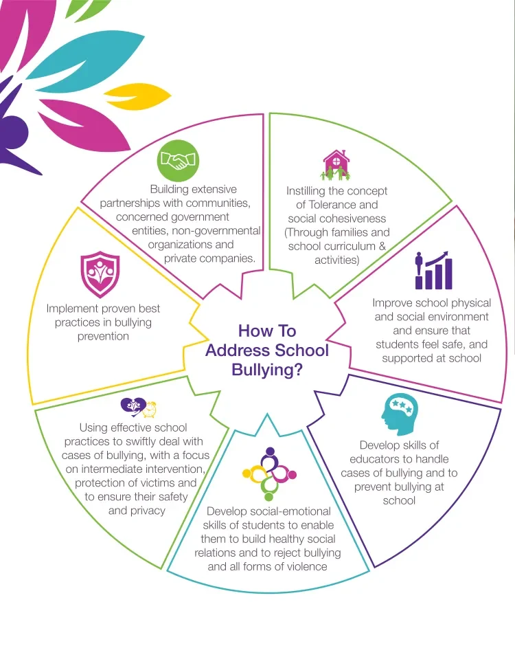
The wheel, in the English pages. 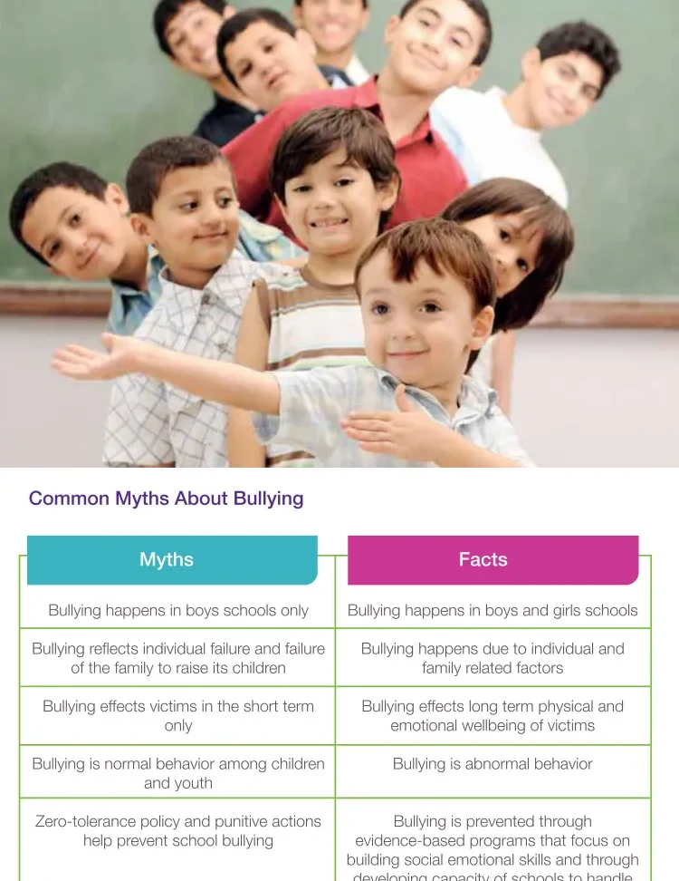
Myths and facts.
III
Made real
We were confirmed on Wednesday 18 April. The week opened on Sunday the 22nd.
-
Build
Then we made it stand up.
Fourteen cut-outs, each with two holes to look through. They stood at the Ministry, in schools and in malls.
The delivered vectors in 3D · portfolio presentation
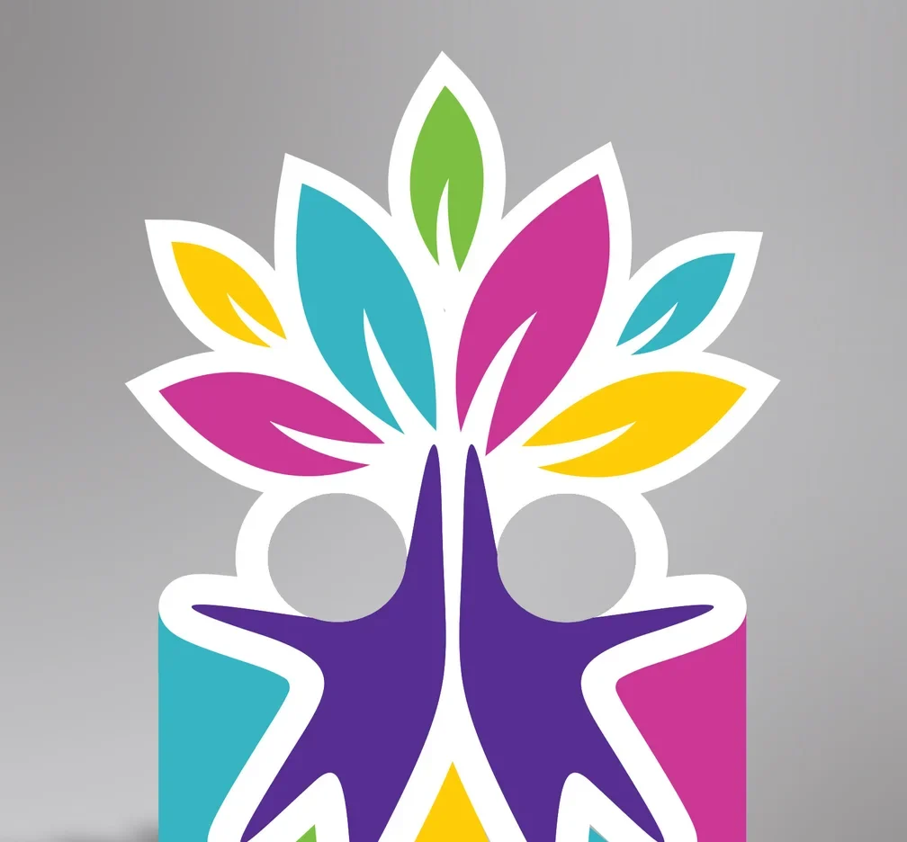
The cut-out as designed. Render. 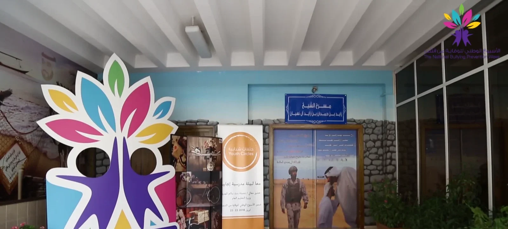
As built, at a school entrance. 23 April 2018. Film frame. -
Produce
Things to wear, to pin, to hold.
All of it designed, produced and delivered for one week.
- 10,000 brochures
- 5,000 wristbands
- 3,000 pins
- 1,000 posters
- 1,000 T-shirts
- 900 balloons
- 200 scarves
- 30 flags
- 14 cut-outs
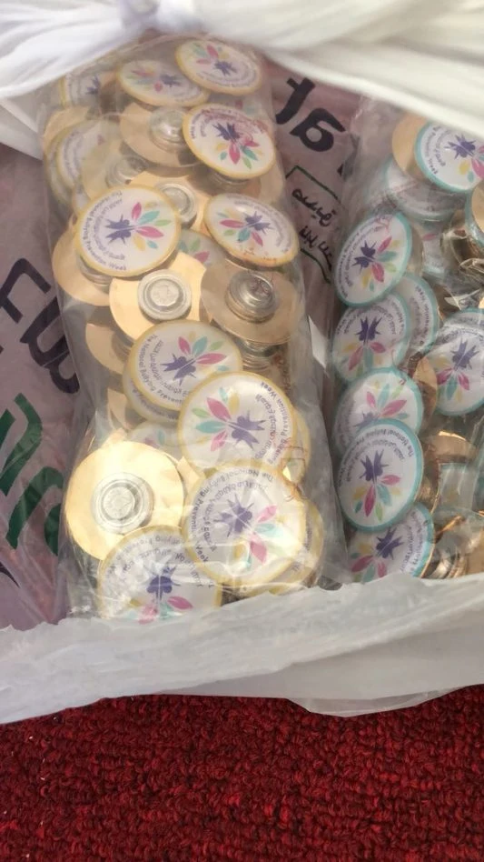
The pins. Team photograph. 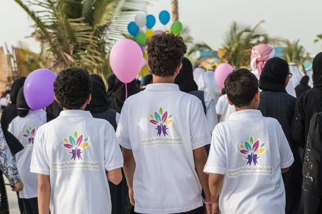
The T-shirts, at the closing walk. Quantities from our final report to the Ministry, 16 July 2018.
-
Stands
Two stands, in two malls. Children drew on paper leaves.
Designed by us, built by UMI. Dalma Mall in Abu Dhabi and RAK Mall in Ras Al Khaimah. The malls were venues.
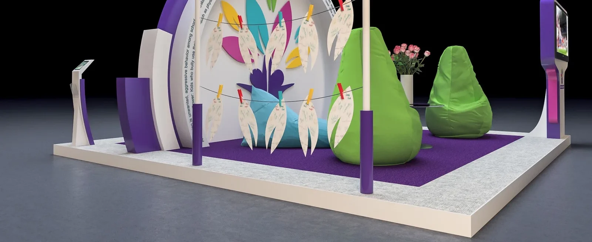
As designed. Render. As built. Dalma Mall, 24 April 2018. As built. RAK Mall, 25 April 2018.
IV
The week
Sunday to Saturday. We filmed it day by day.
-
22 to 28 April 2018
Sunday to Saturday, filmed as it happened.
I had the week filmed day by day. The shots play here without sound.
Sun 22 A school, the first morning
Mon 23 Youth Circles
Students and officials in a circle, in a school hall, talking about bullying. Its film is not shown here: its signs are in Arabic.
Tue 24 Dalma Mall, Abu Dhabi
Wed 25 RAK Mall, Ras Al Khaimah
Thu 26 Dalma Mall and two schools
A walk at the mall and two school visits. They are in our report. We have no film of them.
Fri 27 La Mer, through the night
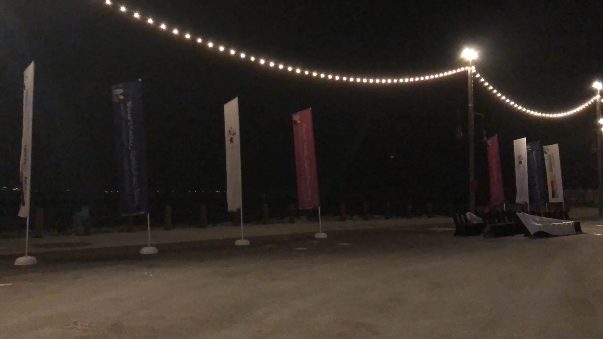
The flags are up. 4:26 on Saturday morning. Team photograph. Sat 28 La Mer, Dubai
-
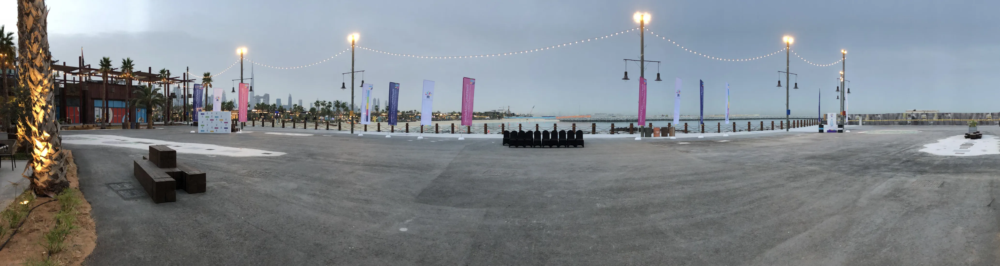
La Mer, Dubai · Saturday 28 April 2018
We set it before sunrise.
Thirty flags, three water stations, the start sign, the chairs. This is 5:41 in the morning. Team photograph.
-
The finale
Then we walked.
I led the closing walk. Horses, pipers, then everyone. La Mer was the venue, with Meraas.
From our film of the evening.
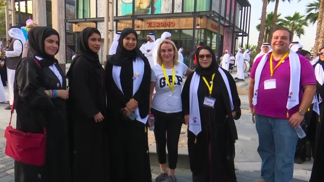
With the team at the finish. I am in the magenta shirt. Film frame. -
After
The line stayed.
In November 2019 the third national week ran under “Together we flourish with tolerance”. We made the first week. The later weeks are not our work.